01
如何更改语言
点击顶部菜单「设置」→「语言」，再选择需要的语言。选好后退出并重新启动 CLO，界面语言才会切换。
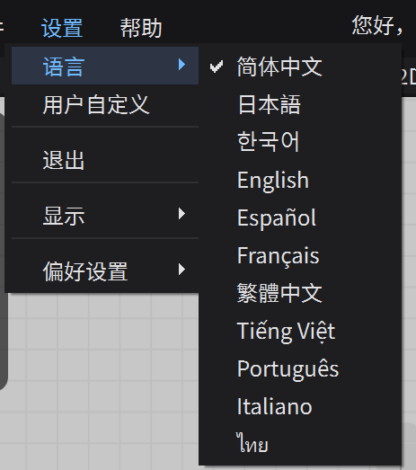
第一章｜从基础设置开始，认识 CLO3D 工作界面、3D 视角操作与二维、三维、缝纫工具。配合实机截图和录屏逐步练习。
正式操作前，先学会切换界面语言，并记住工具栏或工作窗口消失时的恢复方法。以下截图来自本机 CLO 中文界面。
点击顶部菜单「设置」→「语言」，再选择需要的语言。选好后退出并重新启动 CLO，界面语言才会切换。

如果工具栏不见了，点击顶部「设置」→「显示」，进入「3D 工具栏」或「2D 工具栏」的子菜单，开启需要的工具栏。
如果 3D 或 2D 工作窗口不见了，继续进入「窗口」，勾选「3D 视窗」或「2D 板片视窗」。如果整个布局乱了，可点击该菜单底部的「重置画面」。
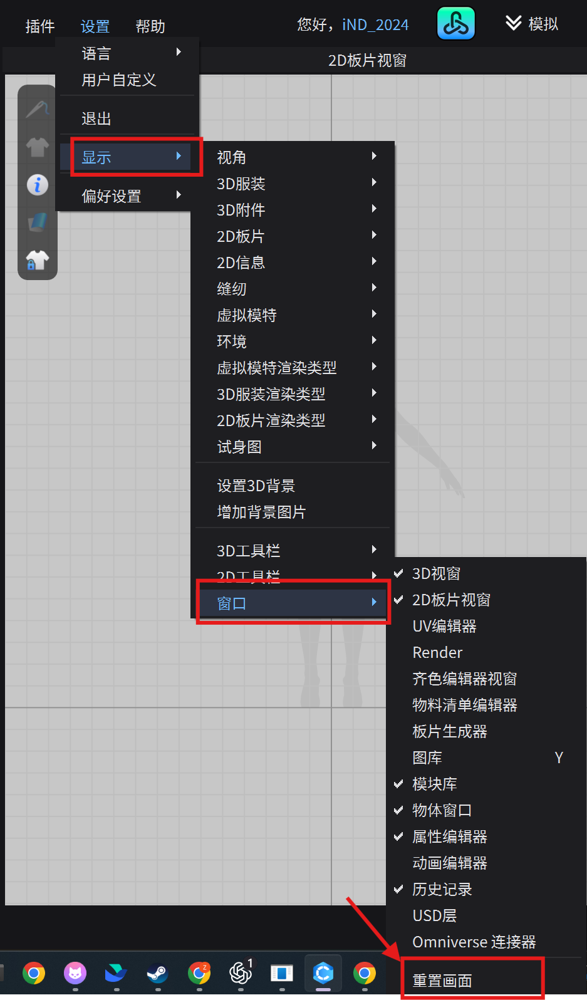
CLO3D 的工作主要在 3D 窗口和 2D 版片窗口之间进行。资源库、对象列表和属性编辑器分布在两侧。先认清各区域，再开始画版。
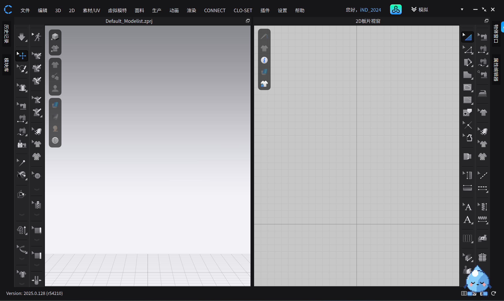
先在 3D 窗口加入模特，再围绕模特安排版片。下面四步使用本机 CLO 2025 的真实操作截图。
在顶部菜单依次点击「文件」→「增加」→「虚拟模特」。此时会打开模特文件选择窗口。
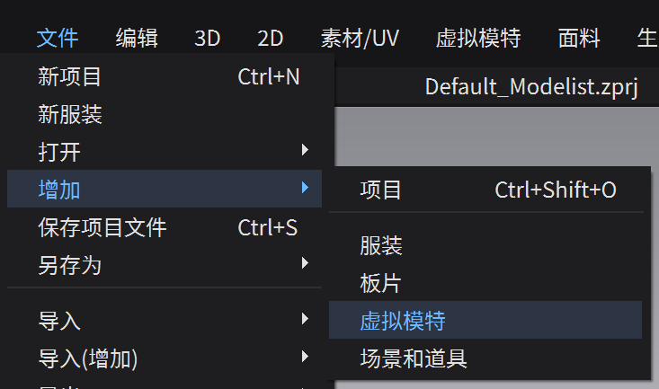
在 Avatar 文件夹中选择想要的类别，例如 Female、Male、Kid 或 Mannequin。不同电脑的 CLO 版本、安装资源和文件夹内容可能不同，以自己看到的文件为准。
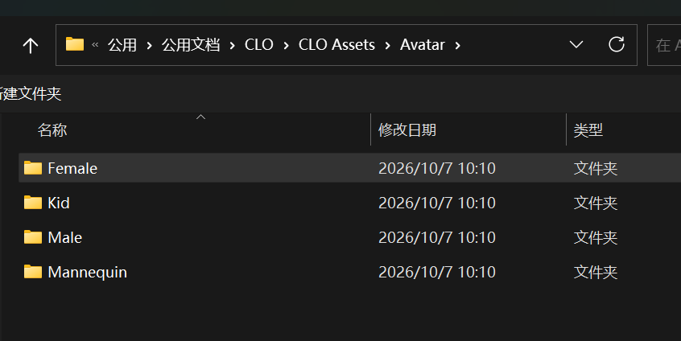
进入所选类别后，找到扩展名为 .avt 的模特文件。图中 FV2.1_Mia.avt 只是示例；双击你想用的 .avt 文件，或选中后点击「打开」。
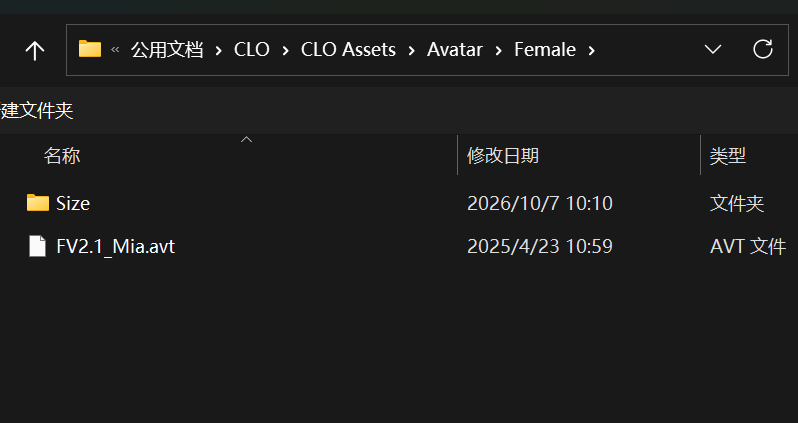
返回 CLO 的 3D 窗口。看到模特出现在工作区，就说明添加成功；图中展示的是其中一个女性模特。
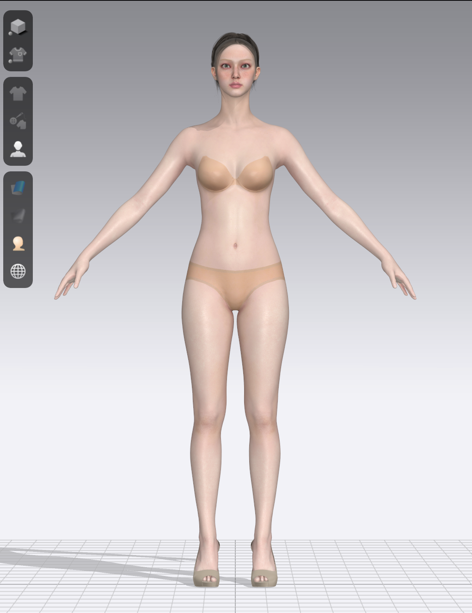
先认清真实图标或菜单位置，再跟着录屏操作。本章已加入整片调整、点线编辑、曲线与加点演示；其他工具保留本机 CLO 2025.0.128 中文菜单截图。
画版之前，先认清二维窗口里的两个位置：右侧工具栏，以及中央的模特剪影。点击图片可以放大查看。
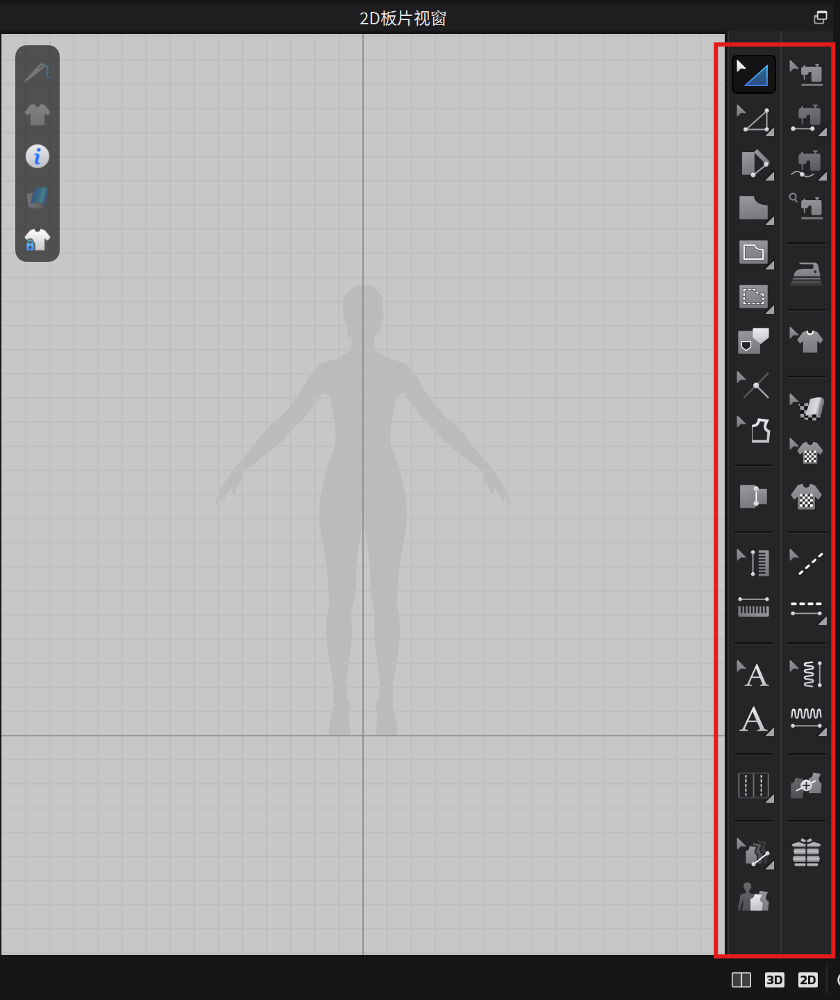
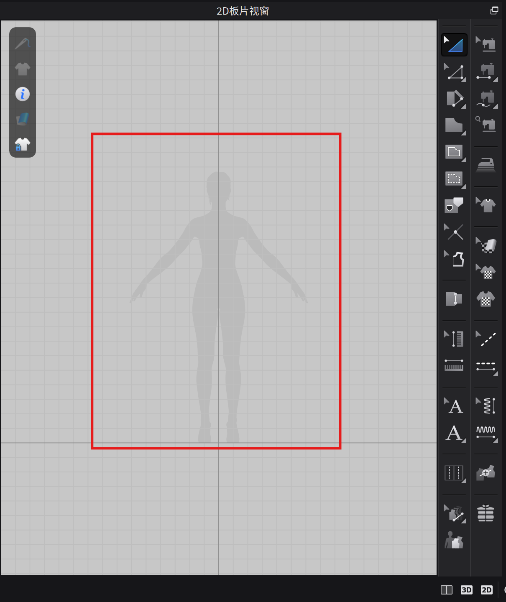
先学会展开工具组，再跟着视频画一个矩形。
录屏同时显示左侧 3D 窗口和右侧 2D 窗口。可以暂停或全屏播放，边看边做。
矩形在右侧 2D 工作区生成的同时，也会在左侧 3D 窗口出现。它在 2D 中相对模特剪影的摆放位置，对应着 3D 中相对模特的位置；从不同角度看，版片的外观会因透视而变化。
「调整板片」（A）选择并移动整块版片；「编辑板片」（Z）只调整选中的点或线，改变局部轮廓。
Transform Pattern
2D → 编辑 → 调整板片
选中整块版片，整体移动、旋转或缩放；不单独改变某个点或一条边。
只想修改一个角点或一条边？改用「编辑板片」（Z）。
官方操作说明 ↗Edit Pattern
2D → 编辑 → 编辑板片
选择版片轮廓上的点或线。选中后目标会高亮，拖动它就能改变局部形状。
需要精确数值时，选中目标并开始拖动；拖动过程中按鼠标右键，再输入需要的数值。
官方操作说明 ↗V 在线段上拖出曲线点；C 直接拖动一段线或弧线；X 在边线上添加新点。它们都从右侧编辑工具的小菜单中选择。
Edit Curve Point
2D → 编辑 → 编辑曲线点
只在线段上操作。拖动线上的曲线点，可将直边拉成弧线，并控制弧线形状。
此工具作用于版片的边线，不能在版片内部直接拉出曲线。
Edit Curvature
2D → 编辑 → 编辑圆弧
直接拖动一段线或已有弧线，快速改变整段的弯曲程度。
视频先把右侧边线拉成弧线，再调整顶部已有的弧线。
官方操作说明 ↗Add Point / Split Line
2D → 编辑 → 加点／分线
在版片边线上添加新点，把原线段分成更短的段，方便后续局部编辑。
加点会分割边线，不会把整块版片切成两块。
官方操作说明 ↗Delete a Pattern
2D 窗口 → 选中版片 → Delete
删除不需要的整块版片。先确认整片已被选中，再按键盘上的 Delete 键。
视频中的按键写作 Delete，常缩写为 Del。
Rectangle
2D → 图形工具组 → 矩形
从图形工具组选择「矩形」，在二维工作区画出一块矩形版片。
图形工具组还包括多边形、圆形等工具；右下角的小三角表示可以长按展开。
官方操作说明 ↗Polygon
2D → 生成 → 多边形
逐点绘制自由轮廓的版片。
先练习四边形；没有闭合的轮廓还不是完成的版片。
官方操作说明 ↗Ellipse
2D → 生成 → 圆形
创建椭圆或圆形版片。此中文版本菜单显示「圆形」。
单击空白处可以打开尺寸输入窗口。
官方操作说明 ↗Internal Shapes
2D → 右侧内部形状工具组
内部形状只能画在已有版片内。未选中时，内部线显示为红色；选中后会高亮，也可以用编辑工具调整点和线。单纯画出内部形状，并不会立刻切开版片。
在版片内部选择「内部矩形」，确定两个对角位置，画出闭合轮廓。
切换到编辑工具，选中内部线的点或边并拖动，调整形状。
选中闭合的内部形状，右键选择「切断」。
CLO 沿轮廓把原版片分成外侧和内侧裁片；两块都可以单独移动。
选中闭合的内部形状，右键选择「转化为洞」。
内部区域变成透明开口，原版片保留外框；不会另外生成内侧裁片。
记住区别：切断会得到内外两块可分别移动的裁片；转化为洞只在原版片上留下开口。
先学习用 Gizmo 调整版片，再从模块库添加服装版片、利用模特的安排点快速放置；最后再认识模拟功能。
在 2D 工作区选中一块版片，3D 窗口中的同一块版片也会变成黄色高亮，并出现 Gizmo。它是调整版片位置与方向的控制器。
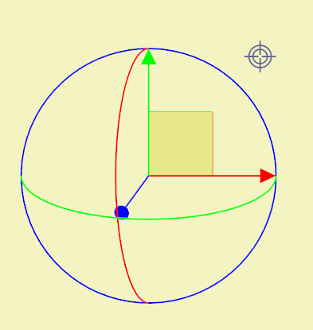
Gizmo 实机截图 · 点击放大2D 和 3D 中高亮的是同一块版片；移动或旋转的是版片，不是相机。
按住箭头拖动，沿对应方向移动版片。
按住圆环拖动，让版片绕对应轴转动。
如果使用「屏幕坐标／视角」模式，Gizmo 的轴会跟随当前相机视角；它不是固定的世界坐标。斜着看时，屏幕上看似向旁边拖动，换个角度可能发现版片也有前后偏移。调整后从其他视角复查；需要固定空间方向时，可切换到「世界坐标」模式。
观察右侧 2D 版片被选中后，左侧 3D 版片同步变黄。拖动直线箭头可移动，拖动圆环可旋转。
先调整观察角度，再从侧面或上方检查版片与模特的距离；改变视角本身不会移动版片。
在 3D 窗口按数字键切换视角，再观察并调整版片：
先从模块库取用现成服装版片，再显示模特身上的安排点，让版片快速到达合适的位置。
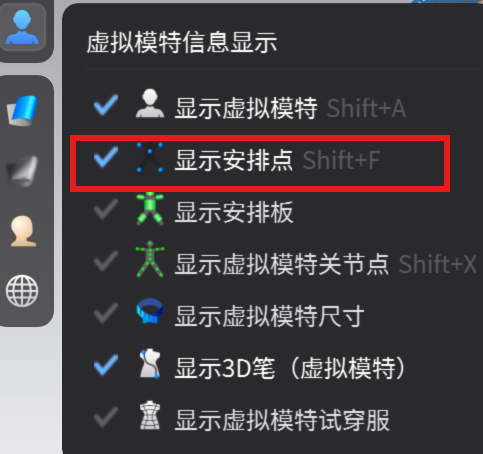
显示安排点菜单 · 点击放大3D 窗口中，版片之间的彩色线条表示缝纫关系：两块版片的边缘已设为相互连接。启动模拟后，CLO 会计算布料在重力和碰撞下的形状。
按空格键启动模拟，左侧工具栏的模拟箭头会变为蓝色。观察原本分开的版片如何根据缝纫线连接、落到模特身上，逐渐形成服装的垂坠。再次按空格键可暂停模拟。
模拟运行时，在 3D 服装上按住鼠标左键并拖动。布料会被拉起或推开，周围的褶皱随之变化；松开鼠标后，布料继续受重力影响重新垂落。
服装没有放在模特身上时，模拟中的重力会让它下坠。虽然可以用鼠标抓起，版片往往会皱缩，难以靠拖拽恢复平整。先按空格键暂停模拟，再重置版片。
先在模特表面画出闭合轮廓，再将选中的区域展平为二维版片。
在模特左侧工具栏长按图标，选择「3D 笔（虚拟模特）」。在 3D 窗口点击起点，再沿要制作的版片轮廓逐点点击；最后回到起点，让首尾相接，形成封闭区域。
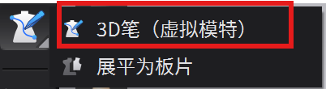
3D 笔菜单 · 点击放大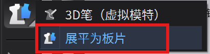
展平为板片菜单 · 点击放大选择左侧工具栏的「编辑 3D 笔（虚拟模特）」。在 3D 窗口点击已绘制的点或线，选中后拖动，可调整轮廓的位置和形状。录屏中依次移动了中线上的点和右侧边线，选中的线会高亮，长度数值也会随调整变化。
不需要的点或线，可先选中再按 Delete 删除。删除后检查轮廓是否仍然闭合，避免后续无法「展平为板片」。
先在 2D 工作区查看或删除缝线，再学习线缝纫与自由缝纫。检查缝线方向后，还可以用对称展开编辑半片服装，让两侧版片与缝线同步。
3D 窗口里，版片之间的彩色线条表示两条边已建立缝纫关系。要查看或编辑这些缝线，请回到 2D 工作区并选择「编辑缝纫线」工具。
点击「编辑缝纫线」（快捷键 B）。2D 版片边缘的缝线会显示出来；选中一条缝线，可以对照 3D 窗口里的彩色连接线，找到它缝向哪一条边。
保持「编辑缝纫线」工具，在 2D 工作区选中要删除的缝线，再按键盘 Delete（有些键盘标为 Del）。对应的缝纫关系会消失，便可重新连接正确的边。
选择「线缝纫」（快捷键 N），依次点击要连接的两条版片边线。缝线一端的短标记类似剪口，提示缝纫的起始端；两边的起止方向要对应。完成后到 3D 窗口查看彩色线条的走向。
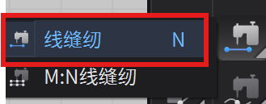
线缝纫菜单 · 点击放大先点击第一条边，再点击对应的第二条边；留意起始端标记。2D 中确认缝线关系后，转到 3D 检查彩色线条是否顺畅，再启动模拟查看服装落下的效果。
如果两条边的起止方向接反，3D 窗口里的彩色连接线会交叉。本例中看到交叉线时，应先停下来检查缝线方向，不要直接进入模拟。
沿用刚才缝反的关系启动模拟，服装会被拉扯、扭曲。按空格键暂停，删除错误缝线；如果版片已经皱缩，先重置 3D 版片，再按正确方向重缝。
查看「重置 3D 版片」操作 ↗「线缝纫」是依次点击两条完整边线；这里使用截图中红框标出的「M:N 自由缝纫」，从边线上的一个点开始，再指定终点，可只缝其中一段。
 M:N 自由缝纫 · 点击放大
M:N 自由缝纫 · 点击放大在第一块版片的边线上点击缝合起点，再点击终点，确定第一段缝纫范围。随后到另一块版片，按对应方向选择第二段的起点与终点。
不必缝到整条边的末端；可在线段任意位置点击，作为缝合终点。选择第二段时，线上出现的蓝色小点是按第一段长度给出的参考终点，便于对齐两侧缝合范围。
制作左右对称的服装时，可以先画好前身或后身的一半，再让 CLO 镜像展开另一半。选择带「缝纫线」的对称展开方式，后续调整半片形状或添加缝线时，另一侧也会同步。
解除联动只取消同步编辑，不保证自动把一整片切成两块。删除前一定先看高亮范围。
先看平面纸样与折叠示意，再看成衣的造型。下面四张是参考资料，用来观察一片式裁剪如何从平面形成空间；它们不是本课要逐尺寸复刻的纸样。点击图片可放大查看。
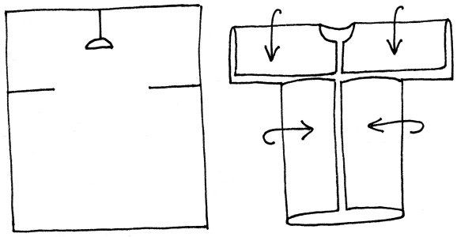
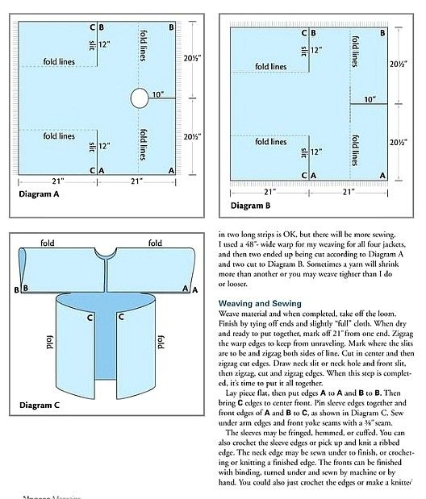
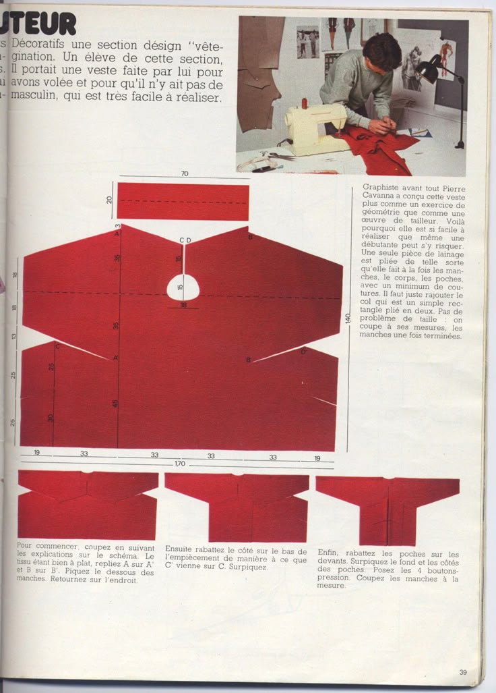
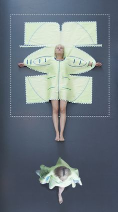
用已学过的矩形、内部形状、圆形和对称展开工具，自由探索平面裁片的组合。这次先完成裁片准备：一块连续的大身片，加上前、后两块圆形裁片；后续再考虑连接和模拟。
自由练习：改变大身片的宽度、袖口间距或圆形裁片的比例。每改一次，观察 2D 与 3D 的对应关系；这一阶段先不要求缝合成衣。
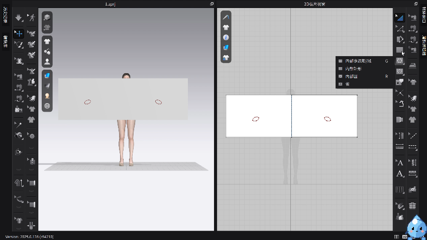
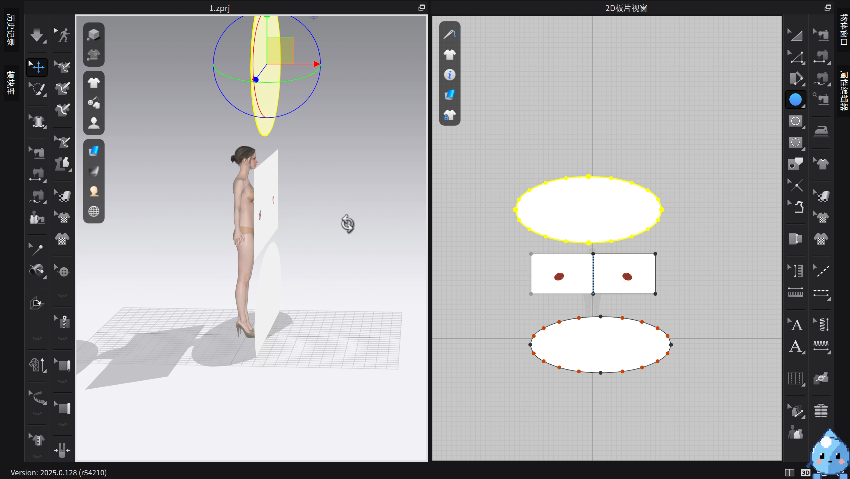
操作说明参考 CLO 官方帮助中心。二维工具卡片与三维 Gizmo、模块库、模拟课程使用实机截图和课堂录屏；缝纫和 3D 笔课程使用本机 CLO 2025.0.128 的工具截图与录屏。
想查看完整的图文讲义、工具对照表和资料链接？点此单独阅读，读完可返回本章操作教程。
打开关于 CLO3D ↗